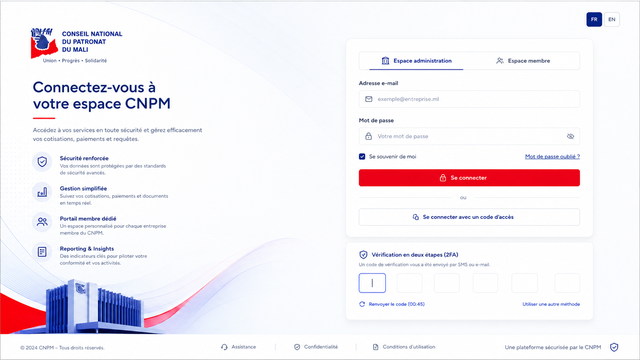
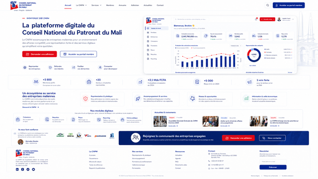
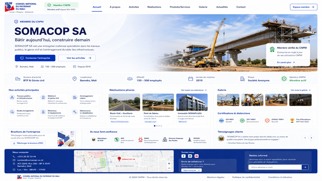
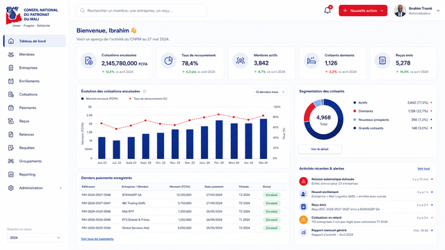
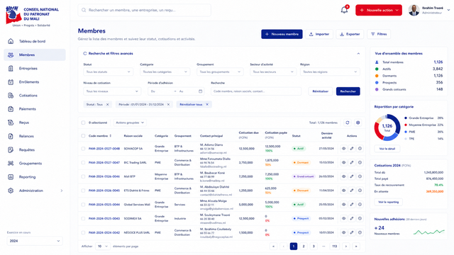
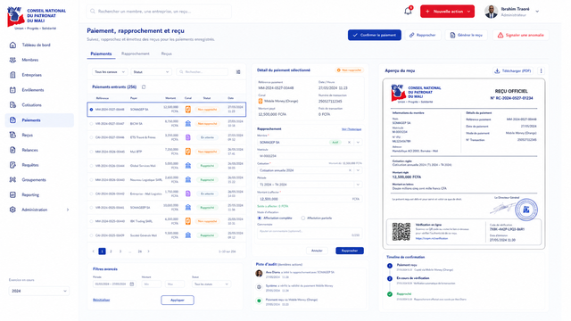

CNPM UI/UX Handoff
Fondations normatives pour une implémentation Web et mobile à haute fidélité.
Indicateurs sobres et orientés décision
Cotisations encaissées2 145 780 000 FCFA+12,6 % sur la période
Taux de recouvrement78,4 %+6,3 points
Membres actifs3 842Base cotisante
Reçus émis5 278Documents officiels
Actions
Statuts
ActifPartiellement payéEn attenteEn retard
Formulaire
Nom officiel de l’entreprise
Exemple d’erreur contextualisée
Tableau de données
| Code | Raison sociale | Groupement | Cotisation due | Payée | Statut | Action |
|---|---|---|---|---|---|---|
| CNPM-2024-0527 | SOMACOP SA | BTP & Infrastructures | 12 500 000 FCFA | 12 500 000 FCFA | Actif | |
| CNPM-2024-0528 | BICIM SA | Commerce | 8 750 000 FCFA | 4 000 000 FCFA | Dormant |
Membre vérifié du CNPM
SOMACOP SA
Bâtir aujourd’hui, construire demain. Une vitrine publique structurée, performante et administrable par le membre.
Références visuelles





